SCHOOL ASSIGNMENT

STOFF is a niche textile dye, made organic and only to be sold in vintage and secondhand stores. The approach is selling to young people buying original secondhand clothes, but also wanting to make it unique with fabric dye.
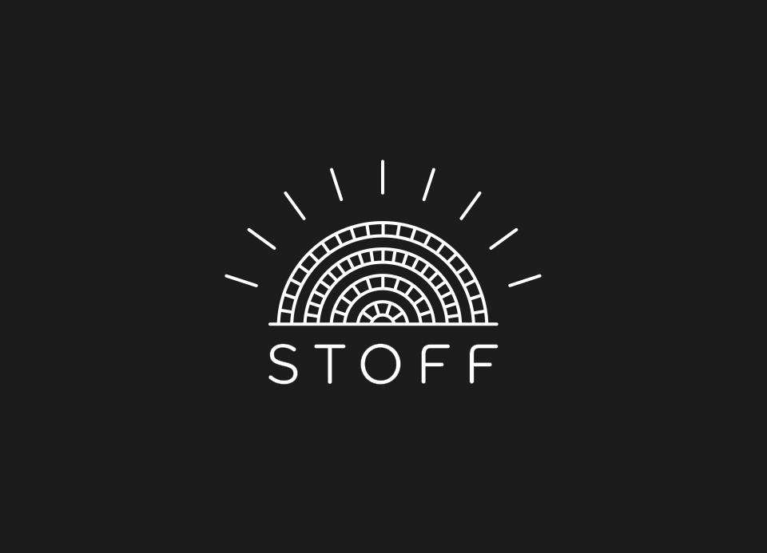
Orient often means that the sun sets or rises in the east. The sun is also light and therefore all colors. The logo takes inspiration from this, and also the eastern art-style.
INSPIRATION
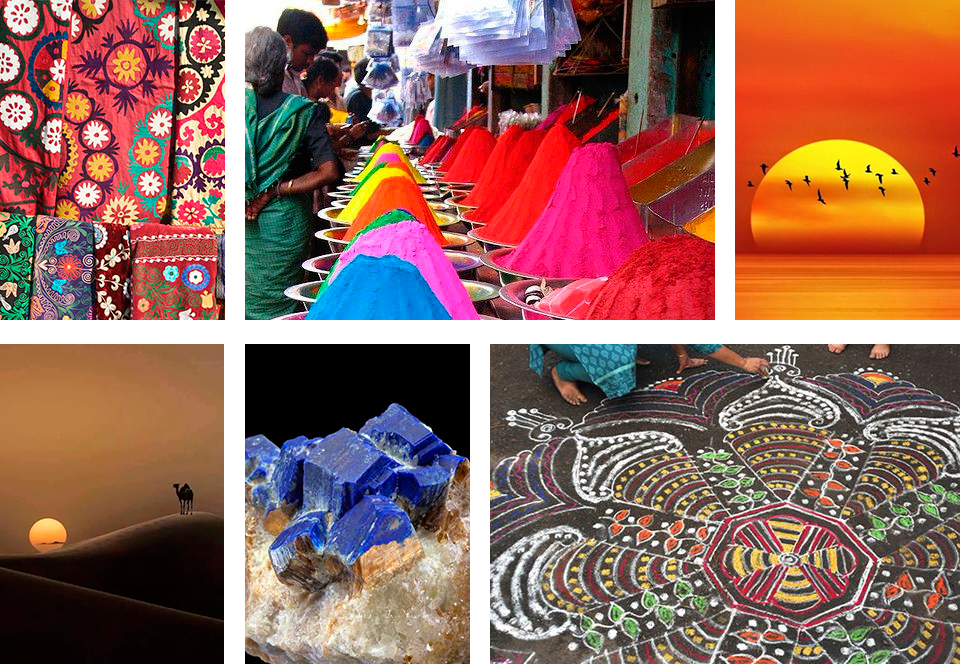
The design is simple and modern, but takes inspiration from the orient, the old silk road and the eastern world. The elements resembles the natural resources that people originally crafted dyes from. Like flowers, minerals and earth.
GRAPHICAL ELEMENTS
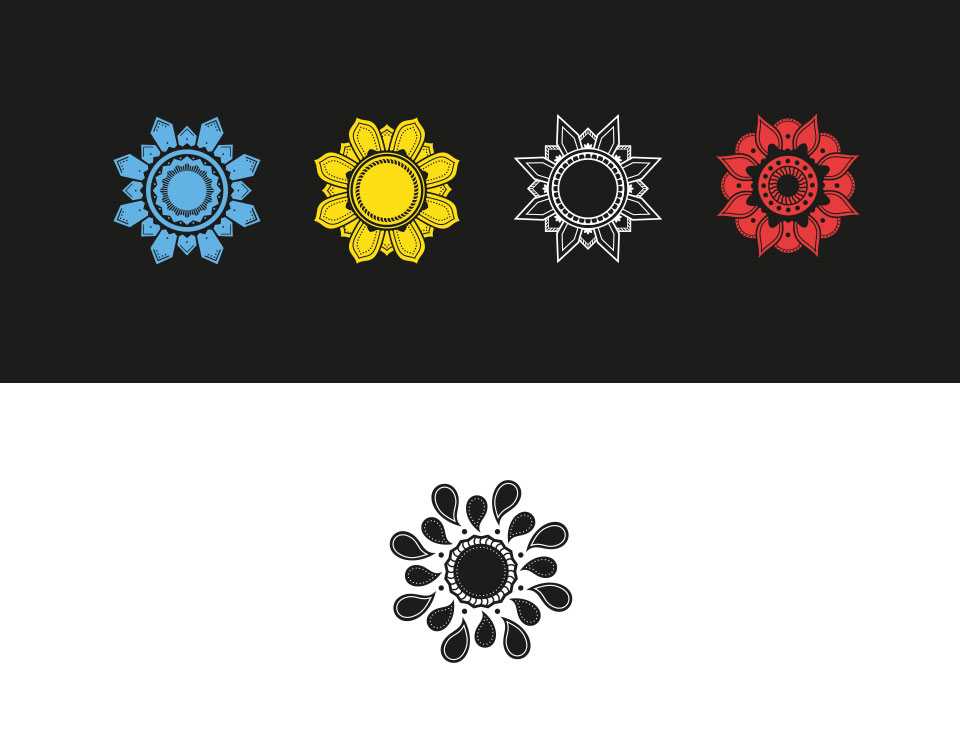
PACKAGING DYES
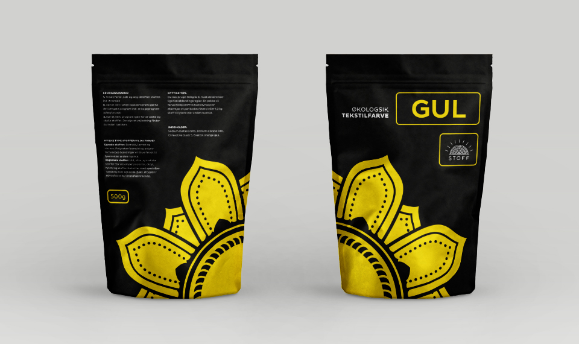
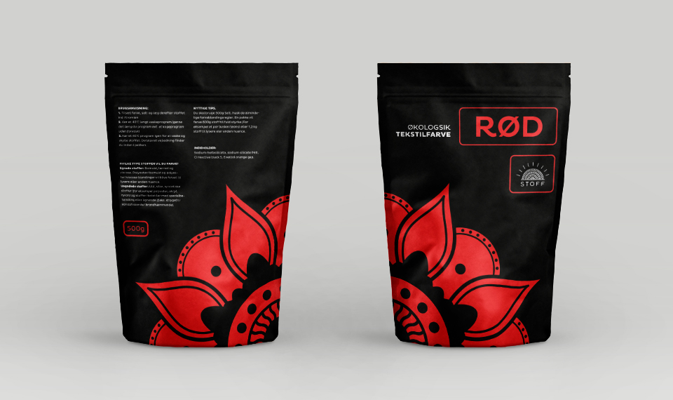
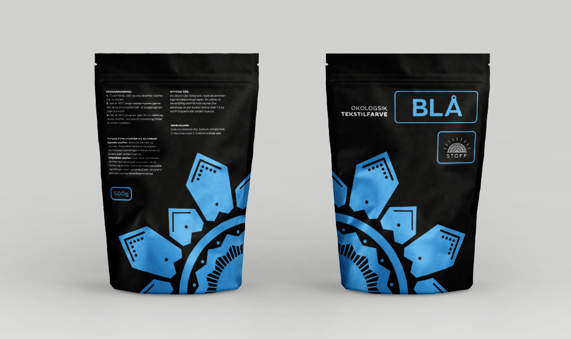
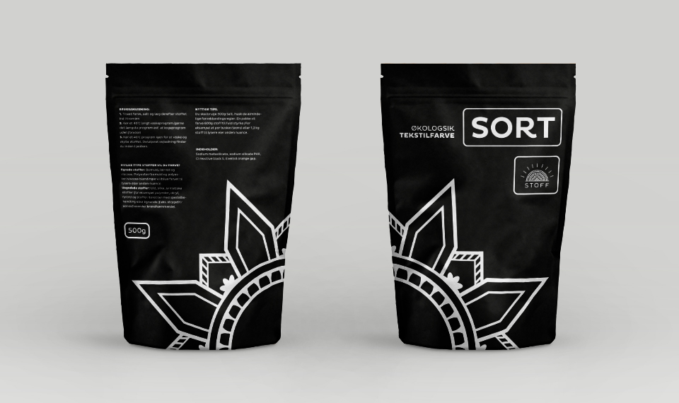
PACKAGING BINDER
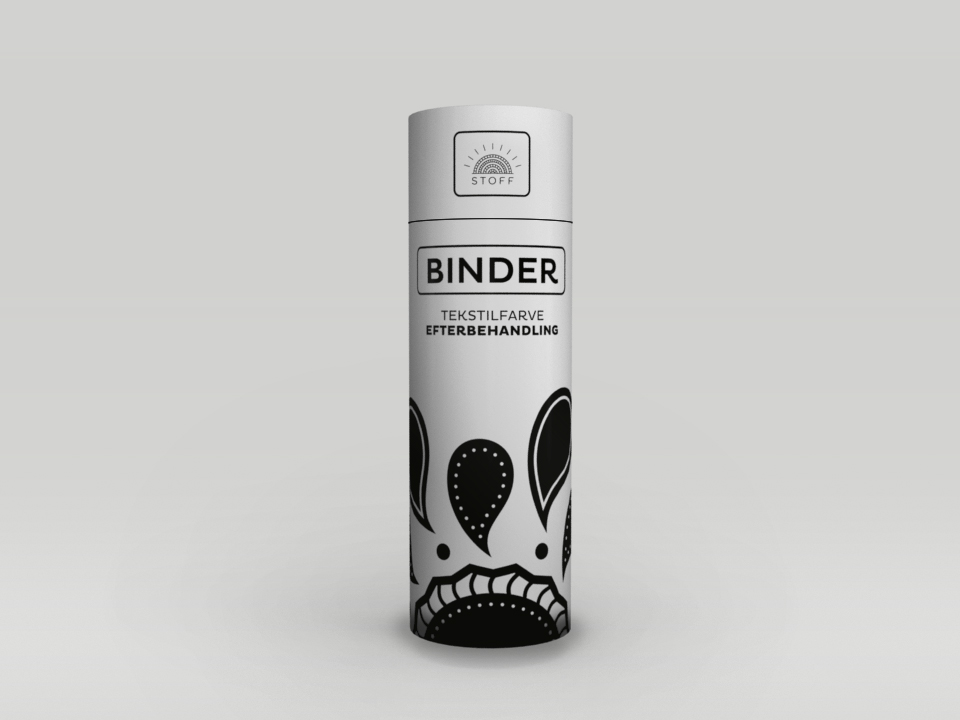
PRODUCT IN STORE
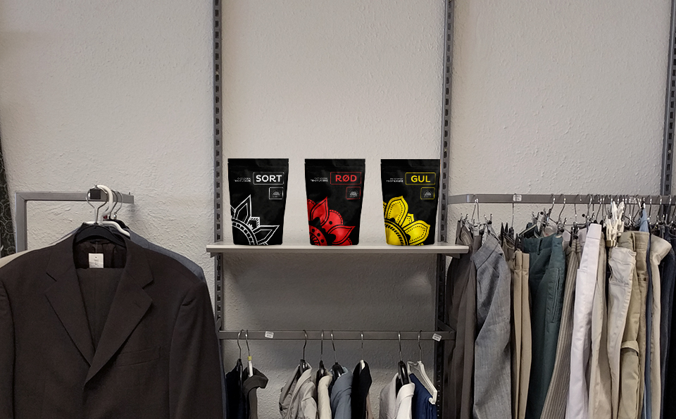
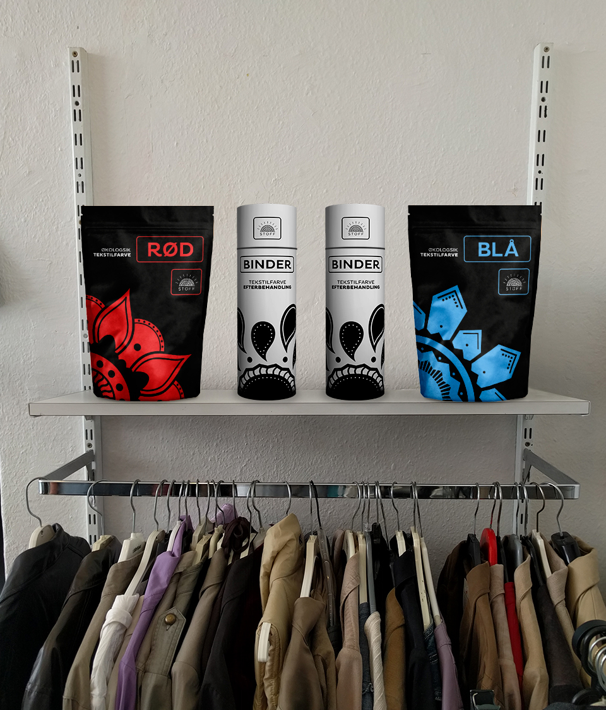
NEWSPAPER AD
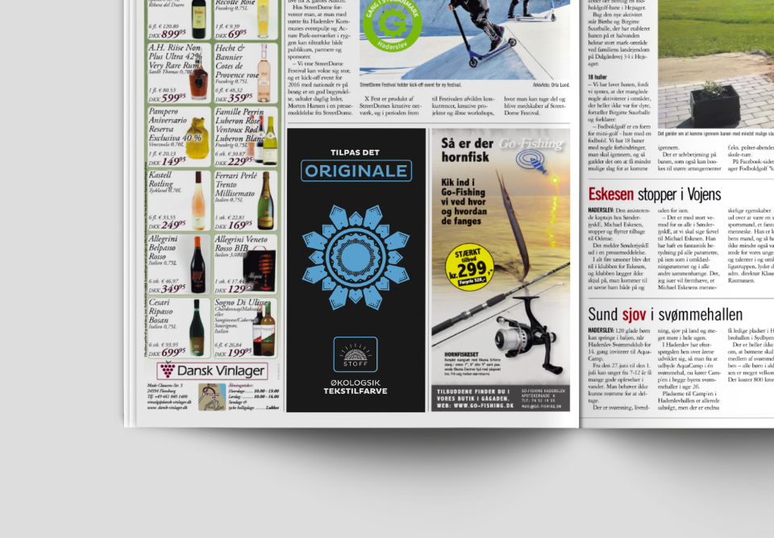
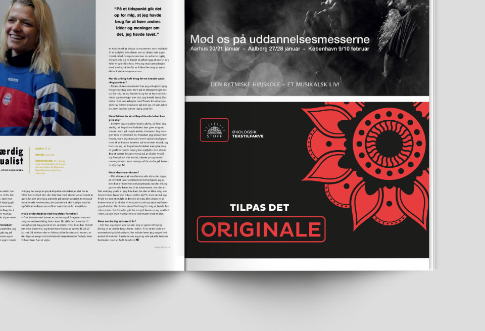
STORE AD
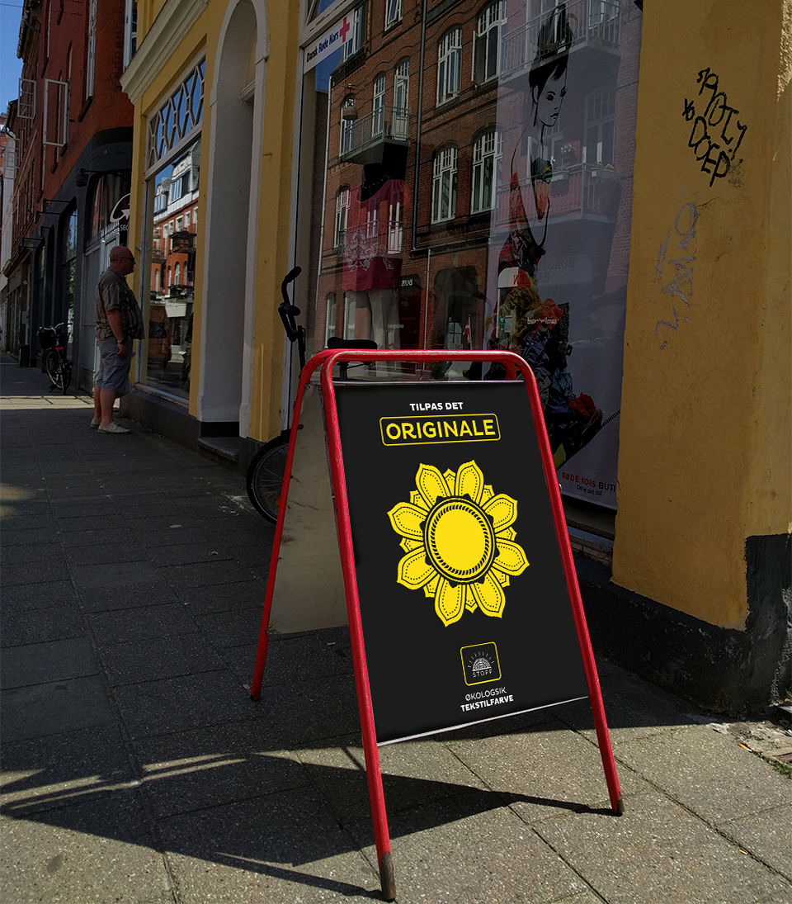
BROCHURE
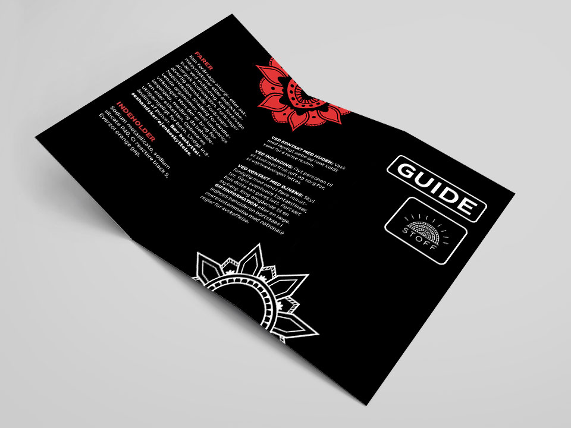
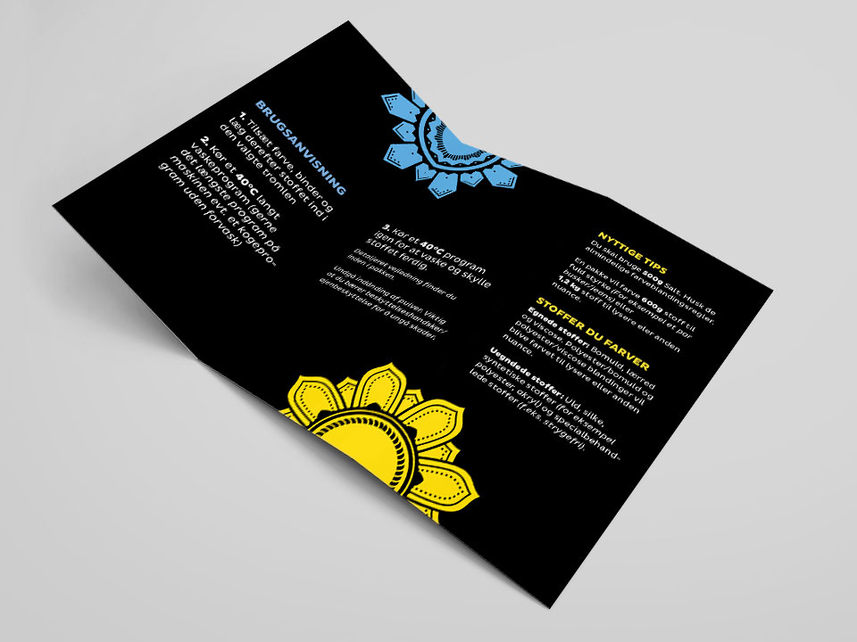